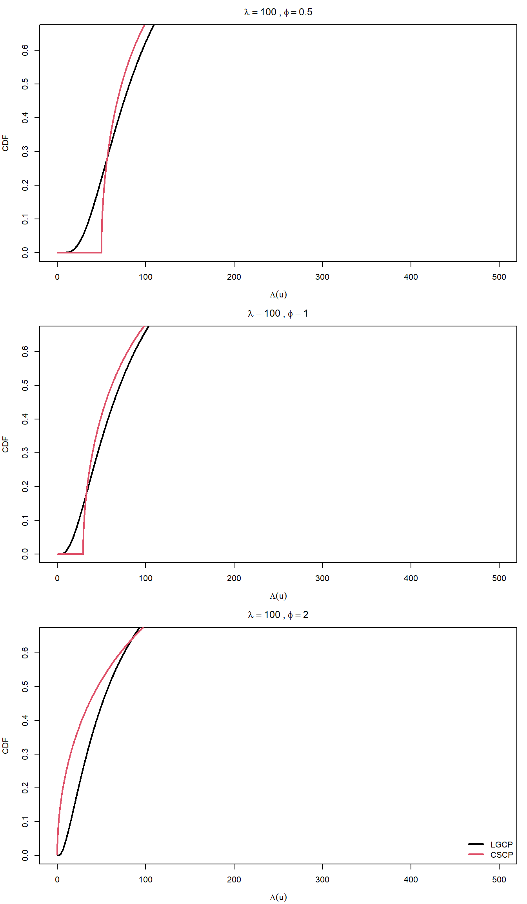

Having established that LGCP and CSCP models can exhibit nearly identical second-order structure, we now ask: where do these models differ?
Our first foray into non-first- and second-order statistics begins with the marginal distributions of the latent fields. Unlike the pair correlation function, which captures second-order dependence, the marginal distribution \(\Lambda(u)\) captuers the structure of the distribution at a fixed location.
Importantly: although the latent intensity is not directly observed, it still determines the local behaviour of the process, and therefore influences observable quantities such as counts in small regions. The hope is that the differences are large enough that they are able to survive what is becoming increasingly apparent as a total nuclear homogenizing poisson sampling step.
The most obvious way to start investigating the difference is to plot the two processes marginal intensity distributions, for fixed \((\lambda, \phi)\).
45.1 Intro - corrected
Having established that LGCP and CSCP models can exhibit nearly identical second-order structure, we now ask: where do these models differ?
Our first step beyond second-order summaries is to examine the marginal distributions of the latent intensity field. Unlike the pair correlation function, which captures dependence between locations, the marginal distribution of \(\Lambda(u)\) describes the behaviour of the intensity at a single location.
Although the latent intensity surface is not directly observed, it governs the local behaviour of the process, and therefore influences observable quantities such as counts in small regions. The key question is whether differences in these marginal distributions are large enough to remain detectable after the Poisson sampling step that generates the observed point pattern.
Note
Although the latent intensity surface is not directly observed, it governs the local behaviour of the process, and therefore influences observable quantities such as counts in small regions.
So I understand the latent intensity is obviously not observable. I don’t fully understand why we phrase it as governing the “local behaviour” of the process.
Like, would this be better: “it is determined by the local behaviour of the process”?
What does “local behaivour” mean exactly here? I feel like this is a big source of my confusion. Because it is not exactly clear not me, how the marginal distribution is reflected in the observed point patterns.
45.2 Recap - corrected
So before we cover the differences in marginal distributions, it is probably a good idea for us to revise what the marginal distributions are.
Recall, a cox process is defined by its random intensity function \(\Lambda(u)\).
This is a function which takes a location \(u\) as an argument, and outputs a random variable, which describes the intensity of the field at that location.
The form \(\Lambda\) takes, is a transformation of some Random Field.
Note that the random intensities of both LGCP and CSCP transform Gaussian random fields. GRFs are random fields such that any finite subset of them will be multivariate-normally distributed.
Now, \(\Lambda\) determines the full joint distribution of the Cox Process, over all locations. This can be thought of as \(\Lambda\) being responsible for assigning a random variable to each one of the uncountably infinite number of locations over which it is defined, and the exact distributions of these RVs being assigned are determined by the functional form and parameters of \(\Lambda\).
This full joint distribution is a very difficult object to estimate from just observed point patterns.
So if we want to find differences between two \(\Lambda\)’s, and we can’t directly observe, or even estimate them well, then perhaps we could look at some properties of the \(\Lambda\)’s, and if the \(\Lambda\)’s we are comparing are sufficiently different, then we might be able to tell them apart (poorly phrased).
One example of this we saw in the last few chapters, where the “property” we were looking at was the PCF, a summary of essentially the covariance between two locations.
This section, we are considering a different “property”, that is the marginal distribution of the \(\Lambda\)’s.
So how exactly are the marginal distributions different than the full joint distribution?
Essentially, we are “accounting for” all possible values of the other locations, taking the correlation of them into account, and integrating out the dependence on all other locations.
The marginal distribution is essentially telling us: in the complete absence of information about any other locations, what would the distribution of the intensity look like at this single point.
In other words, if we repeatedly simulated the full intensity surface \(\Lambda\), and recorded the value at a fixed location \(u\), the resulting values would follow the marginal distribution of \(\Lambda(u)\).
Note
Suggested:
It is important to distinguish between marginal and joint structure.
The full random field \(\Lambda\) defines a joint distribution over all locations, which is typically intractable to estimate from observed point patterns. In contrast, the marginal distribution of \(\Lambda(u)\) describes the distribution of the intensity at a single fixed location.
Crucially, for Gaussian random fields, the marginal distribution at a point depends only on the mean and variance, and not on the spatial correlation structure. This means that marginal distributions capture fundamentally different information from second-order summaries such as the pair correlation function.
This means that marginal distributions capture fundamentally different information from second-order summaries such as the pair correlation function.
To me this is the most important sentence here, but I feel that we are not doing nearly enough to justify it, or at least make it convincing / clear.
Note
Another sugestion:
The marginal distribution can be understood operationally as follows: if we repeatedly simulate the full intensity surface \(\Lambda\), and record the value at a fixed location \(u\), the resulting values will follow the marginal distribution of \(\Lambda(u)\).
This perspective highlights that the marginal distribution describes the variability of the intensity at a single point, independent of its relationship with other locations.
45.3 Recap - V3
Before investigating differences in marginal distributions, it is helpful to revisit exactly what these objects represent.
Recall that a Cox process is defined through a random intensity function \(\Lambda(u)\).
This is a function which takes a location \(u\) as input, and returns a random variable describing the local intensity of the process at that location. Conditional on \(\Lambda\), the point pattern is generated as an inhomogeneous Poisson process.
In both the LGCP and CSCP models, the random intensity \(\Lambda(u)\) is obtained as a transformation of an underlying Gaussian random field (GRF).
A Gaussian random field is defined by the property that any finite collection \((Z(u_1), \dots, Z(u_k))\) is jointly multivariate normal. As such, the field is completely characterised by its mean function and covariance function (special property we get from the normal distribution).
45.3.1 Joint structure
The random field \(\Lambda\) induces a joint distribution over all locations \(\{ \Lambda(u) : u \in W \}\).
Conceptually, this corresponds to assigning a random variable to each point in space, with dependence between locations governed by the covariance structure of the underlying Gaussian field (which we also specify).
This joint distribution is extremely high-dimensional (infinite-dimensional, due to uncountably infinite locations in any region), and is generally intractable to estimate from observed point pattern data.
45.3.2 Marginal structure
Rather than attempting to approximate the full joint distribution, we may instead consider properties of the field.
One such property is the marginal distribution of \(\Lambda(u)\) at a fixed location \(u\).
Formally, this is the distribution obtained by considering only the random variable at a single location, and ignoring all others. Equivalently, it can be viewed as integrating out the dependence on all other locations.
Another way of thinking about this is as follows: if we repeatedly simulate the full intensity surface \(\Lambda\), and record the value at a fixed location \(u\), then the resulting values follow the marginal distribution of \(\Lambda(u)\).
45.3.3 Marginals vs second-order structure
It is important to distinguish between marginal structure and second-order structure.
The marginal distribution of \(\Lambda(u)\) describes variability of the intensity at a single location.
The pair correlation function (PCF) describes dependence between pairs of locations, and is therefore a second-order summary.
For Gaussian random fields, this distinction becomes particularly clear.
At any fixed location \(u\), we have \[
Z(u) \sim N(\mu, \sigma^2)
\] so the marginal distribution depends only on the mean and variance.
In contrast, the joint behaviour of two locations depends on the correlation function:
\[
\mathrm{Cov}(Z(u), Z(v)) = \sigma^2 \rho(r)
\]
where \(r = \|u - v\|\).
As a consequence:
Marginal distributions depend only on \((\mu, \sigma^2)\)
Second-order summaries (such as the PCF) depend on the correlation function \(\rho(r)\)
These are fundamentally different components of the model.
Note
The whole of the last part was only considering the exponential correlation function.
Would changing this make any difference? I guess what I’m asking is are there any correlation functions for which squaring them is MUCH different to exponentiating?
Note
Suggested note:
Marginal distributions and second-order summaries capture distinct and complementary aspects of the latent field.
Two models may have nearly identical second-order structure (i.e., similar PCFs), while having substantially different marginal distributions, and vice versa.
This motivates the investigation of marginal behaviour as a potential avenue for distinguishing between LGCP and CSCP models.
I still don’t feel it is clear exactly that these two objects (marginal distributions & second order summaries) encode different information. In particular, it’s not obvious to me why any second-order summary doesn’t include information about the marginal distribution? Still getting comfortable with this difference
Note
Also I still don’t understand why the PCF happens to be “observable in realized point patterns”, while the marginal distribution is not.
I understand that when we estimate the PCF, we are estimating a property of the full joint distribution, but there are plenty of other properties (i.e. the marginal distribution) which are NOT directly estimable from observed point patterns. When is / isn’t a property directly estimable? What does directly estimable even mean?
Note
Also is it accurate to say “the PCF is a summary of the covariance between two locations in the random field \(\Lambda\)?”
Or maybe “the PCF is a functional based on the covariance between two locations in the random field \(\Lambda\)?
Note
Another suggested include:
Importantly, this separation implies that second-order summaries alone cannot recover the marginal distribution, and vice versa. As such, any attempt to distinguish models based solely on second-order structure may fail if the models differ primarily in their marginal behaviour.
Note
Might be interesting to find an example of a Cox process for which the second order behaivour is identical (or almost), but the marginal distributions are much different.
45.4 PDFs
Obvious first step. Derive these bad boys. Starting with the CSCP.
Also, since \(\Lambda(u)=\exp(Z(u)) > 0\) always, the density is zero for \(\lambda \le 0\).
So, at a fixed location \(u\), the marginal intensity follows a lognormal random variable.
In particular:
it has support over \((0, \infty)\)
tends to \(0\) as \(\lambda \to 0\)
has a (supposedly) heavier right tail than the CSCP marginal
45.5 Plotting the PDFs
Setup code:
Code
s <-0.05# not used in marginals, kept for consistencydf <-1# Marginal density functionsd_lgcp_marginal <-function(x, mu_log, sigma_log) {dlnorm(x, meanlog = mu_log, sdlog = sigma_log)}d_cscp_marginal <-function(x, mu, sigma2, df =1) { out <-numeric(length(x)) ok <- x > mu out[ok] <-dchisq((x[ok] - mu) / sigma2, df = df) / sigma2 out}# Parameter extraction + density evaluationget_marginal_densities <-function(x, lambda, phi, s =0.05, df =1) { lgcp_pars <-lgcp_params(lambda = lambda, phi = phi, s = s) cscp_pars <-cscp_params(lambda = lambda, phi = phi, s = s, df = df) y_lgcp <-d_lgcp_marginal( x,mu_log = lgcp_pars$mu,sigma_log = lgcp_pars$sigma ) y_cscp <-d_cscp_marginal( x,mu = cscp_pars$mu,sigma2 = cscp_pars$var,df = df )list(y_lgcp = y_lgcp,y_cscp = y_cscp,lgcp_pars = lgcp_pars,cscp_pars = cscp_pars )}# Plotting helper plot_marginal_pdf <-function(x, lambda, phi, s =0.05, df =1,ylim =NULL, main =NULL,show_legend =FALSE) { dens <-get_marginal_densities(x, lambda, phi, s = s, df = df)if (is.null(ylim)) { ylim <-range(c(dens$y_lgcp, dens$y_cscp), finite =TRUE) }plot( x, dens$y_lgcp,type ="l",lwd =2,col =1,xlab =expression(lambda),ylab ="Density",ylim = ylim,main = main )lines(x, dens$y_cscp, lwd =2, col =2)if (show_legend) {legend("topright",legend =c("LGCP", "CSCP"),col =c(1, 2),lwd =2,bty ="n" ) }}
First we look at a single plot of the PDF with \((\lambda = 100, \phi = 2)\).
Immediately some interesting things to observe here:
Firstly, because we have \(\phi = 2\) (maximum clustering strength under CSCP), the corresponding \(\mu\) parameter of the random intensity must be 0 (recall that the clustering strength decreases as \(\mu\) grows, and we require \(\mu \ge 0\), hence maximum clustering necessarily has \(\mu = 0\)). And so because \(\mu = 0\), the PDF of the CSCP here mirror exactly that of a (scaled) single df Chi-square.
Second interesting thing to note is that, for matched \((\lambda, \phi)\), the LGCP density is smoother and spreads probability mass more broadly over moderate intensities, whereas the CSCP puts more mass near its lower boundary because of the boundary singularity.
Thirdly, obviously, note that the CSCP has a left-asymptote at \(\infty\).
Lastly, and I think the most important observation, is that the tails are, at least visually, on this scale, extremely similar. I was expecting at least a visible difference between the two, but they are almost indistinguishable.
We now look at the effect of varying \(\phi\) on the PDF.
We can see exactly as we expected. Decreasing \(\phi\) corresponds to a higher \(\mu\) for the CSCP, and a right-shift of the PDF curve.
It is difficult to tell if the actual curvature is changing so we overlay the CSCP curves below.
So it does not appear that the curvature is changing, only the right shift.
Note
I want to add some sort of explanation why the curvature isn’t changing, but it is kind of hard to do when we only have the PDF in terms of \(\mu\) and \(\sigma^2\).
I think it might be worth quickly rewriting the PDF in terms of \(\lambda\) and \(\phi\) to make some more meaningful comments.
And finally, looking at the effect of varying \(\lambda\).
Note
So varying \(\lambda\) has confused me quite a lot.
I believe it is just the equivalent of “stretching” out the two curves. And because we are matching \(\lambda\) and \(\phi\), changing \(\lambda\) does not actually have any type of influence on whether the curves are more more or less similar.
To illustrate this, notice that we can plot two plots with different \(\lambda\) values, and make them look exactly the same by changing the range of x values we are plotting over:
Ok so what I now believe is happening, is that the “heavier tails” of the LGCP mean that as \(\lambda\) increases, the PDF get “spread out” much faster than the CSCP.
To confirm this, it would be nice to have a clear way of seeing the \(\mu\) and \(\simga\) values for the LGCP and CSCP in the plot legends or something.
We might expect to see the rate of increase in \(\sigma\) relative to \(\lambda\), to be higher than that of the CSCP?
Here I just wanted to demonstrate that changing \(\lambda\) but holding \(\phi\) fixed, effects both the shift and curvature of the CSCP.
Taken together, these plots show that the LGCP and CSCP have structurally different marginal intensity distributions. The CSCP density has a hard lower bound and a boundary singularity, while the LGCP density is smoother near zero and more diffuse over moderate intensities.
Despite these structural differences, the two distributions can still appear surprisingly similar on ordinary scales over practically relevant parameter ranges.
It might help instead to look at the CDF of the marginal distributions, as these have a more natural interpretation.
45.6 CDFs
Corresponding cumulative distribution functions follow immediately from the transformed representations used above.
Hopefully useful as: firstly, they provide a cumulative description of the one-point marginal laws. secondly, they will later allow us to investigate the upper-tail behaviour of the two models through their survival functions.
Note
I feel like it is slightly easier to think about how the marginal distribution might “effect” the observed patterns, by considering the CDF rather than PDF.
45.6.1 CDF of the CSCP marginal
Recall that under the shifted CSCP, \[
\Lambda(u) = \mu + Z(u)^2, \quad Z(u) \sim N(0, \sigma^2)
\] and from the previous subsection we showed that
So, at a fixed location \(u\), the marginal CDF of the LGCP is the CDF of a lognormal random variable.
45.6.3 Comparison
While the CSCP and LGCP can exhibit very similar second-order structure, their one-point marginal cumulative distributions are fundamentally different.
In particular:
the CSCP marginal CDF is that of a shifted and scaled chi-square random variable
the LGCP marginal CDF is that of a lognormal random variable
So the difference between the CDFs of these distributions over the parameter space is going to largely determine how successful we are at distinguishing between the two processes.
As we saw in the PDF plots, for \(\phi = 2\), the CSCP has more mass in the small ranges of x, indicating that we might expect more areas of lower intensity in the surface, which would be reflected in point patterns as more empty area in the observation region.
Note
Not sure about that last sentence. Is this a safe claim to make?
Note
Also, I believe this is he point I wanted to make earlier, regarding varying \(\lambda\) but keeping \(\phi\) fixed:
So, as demonstrated here, if we fix \(\phi\) and vary \(\lambda\), the the curves do not become more distinguishable (in the sense that the features do not change. Obviously, higher \(\lambda\) would mean more observed points and hence better classification).
Varying \(\phi\), fixed \(\lambda\).

Skipping the varying \(\lambda\), as per the callout above.
45.8 Comparing the tails
For the last part of this section, I want to focus on comparing the tails of the LGCP and CSCP.
In particular, I’m interested in investigating this “heavy tail” of the LGCP, because visually, at the scales plotted, it is very hard to identify.
The table below compares upper-tail quantiles for both models.
For a probability level \(p\), the “LGCP quantile” is the value \(q_p\) such that
\[
P(\Lambda(u) \le q_p) = p
\]
under the LGCP marginal distribution, and similarly for the CSCP.
The columns labelled “quantile / mean” express each quantile relative to the mean intensity \(\lambda\), so that, for example, a value of 3 means that the corresponding upper-tail quantile is three times the mean intensity.
Lastly, the column “LGCP / CSCP quantile ratio” compares the two models directly: values larger than 1 indicate that the LGCP has the larger quantile at that probability level.
Across all values of \(\phi\), the same pattern is observed. At moderate quantile levels (up to around 0.99), the LGCP and CSCP marginal distributions are very similar, and in some cases the CSCP even produces slightly larger quantiles.
The difference between the models only becomes apparent in the extreme upper tail. Beyond the 0.999 quantile, the LGCP quantiles exceed those of the CSCP, and this gap increases rapidly as the quantile level increases. This effect is most pronounced for larger values of \(\phi\), where the LGCP can produce substantially more extreme intensity values.
Overall, while the LGCP does exhibit a heavier upper tail, this is primarily very-extreme-tail behaivour and is not visible in the bulk of the distribution.
45.9 Thoughts
Overall, the marginal distributions of the LGCP and CSCP differ in two key ways:
the CSCP places more mass near small intensity values, while the LGCP places relatively more mass over moderate values
the LGCP has a heavier tail at extreme quantiles
Both effects present challenges for practical discrimination. The excess mass at small intensity values in the CSCP may be difficult to estimate reliably from observed data, as the underlying intensity surface is not directly observed. Similarly, the heavier tail of the LGCP manifests only at extreme quantiles, which correspond to rare events in finite samples.
Taken together, these results suggest that while the marginal distributions of the two models are theoretically distinct, these differences are subtle and may be difficult to exploit in practice. This motivates the need to consider more informative summaries, potentially involving joint behaviour over multiple locations, for reliable model discrimination.
To investigate whether these marginal differences can be detected empirically, we now conduct a pilot study based on kernel density estimation of the intensity surface…